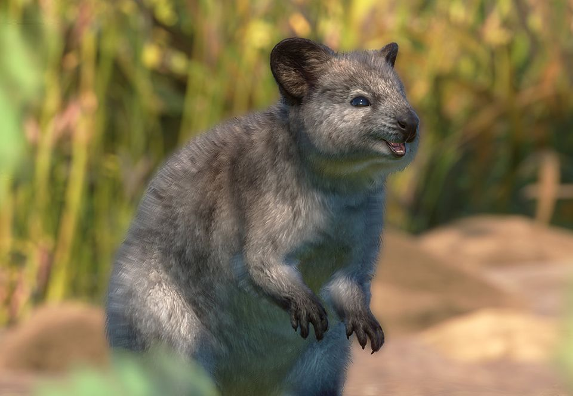

Kuoka
(Setonix brachyurus)
Narażone
Wielkość populacji na wolności: Od 7 500 do 15 000
Kuoka krótkoogonowa (Setonix brachyurus) to niewielki gatunek kangura, który zamieszkuje bagna, tereny krzewiaste i lasy wysp Rottnest i Bald, a także wybrzeże południowo-zachodniej Australii. Ma gęste, jasnobrązowe futro, duże i silne
kończyny tylne, małe i zręczne przednie łapy oraz cienki ogon. Ma zaokrąglone uszy i okrągły, charakterystycznie „uśmiechnięty” pysk. Długość kuok mieści się w granicach 40-54 cm bez ogona, który z kolei ma długość 25-30 cm. Samce są nieco
większe od samic: ważą 2,7- 5 kg, natomiast samice 1,5-3,5 kg.
Kuoki są uznawane za gatunek narażony. Ich liczebność spada ze względu na pojawienie się nowych drapieżników, takich jak zwierzęta domowe, utratę siedlisk w wyniku działalności
człowieka i nieodpowiednie traktowanie dzikich zwierząt, na przykład dokarmianie nieodpowiednim pokarmem. Na fali popularności tego gatunku w Internecie wzrosła ilość środków przeznaczanych na projekty ochrony gatunku. W ich naturalnych
siedliskach wprowadzono przepisy ochronne, które zabraniają dotykania, dokarmiania i udamawiania kuok. Podjęto również starania mające na celu odnowę ich naturalnego środowiska w niektórych rejonach Australii kontynentalnej.
| Kontynenty | Regiony | Biomy |
|---|---|---|
| Oceania | Australia |  |

| Wielkość grupy (bez młodych osobników) |
1-24 (samce do 23, samice do 23) |
|---|---|
| Wielkość grupy kawalerskiej samców (bez młodych osobników) |
1-24 |
| Wielkość grupy kawalerskiej samic (bez młodych osobników) |
1-24 |
| Hierarchia dominacji | Dominacja większych samców |
| Strategia rozrodcza | Promiskuityzm |
| Zasady dotyczące dojrzałości | Stadność: całe dojrzałe potomstwo jest tolerowane w grupie |
| Stosunek do człowieka | Ufność |
| Wielkość |
 48 cm wzrostu 48 cm wzrostu  46 cm wzrostu 46 cm wzrostu |
|---|---|
| Długość życia |
10 lat 10 lat |
| Waga |
3,45 kg 2,4 kg |
| Wiek dojrzałości płciowej | 1 rok |
|---|---|
| Wiek zakończenia okresu reprodukcyjnego | Śmierć |
| Liczba młodych przypadająca na okres godowy | 1 |
| Długość ciąży/inkubacji | 7 mies. |
| Okres międzyurodzeniowy | 5 mies. |
| Rozmnażanie w niewoli | Łatwe |
Potrzeby społeczne
Kuoki żyją w luźno powiązanych grupach rodzinnych liczących od 12 do 24 osobników, lecz w okolicach źródeł wody i pożywienia potrafią formować grupy liczące nawet 150 osobników. Tolerują obecność przedstawicieli swojego gatunku, lecz nie są zbyt społeczne.
Rozmnażanie
Kuoki w Australii kontynentalnej rozmnażają się przez cały rok, zaś populacja na wyspie Rottnest rozmnaża się jedynie od stycznia do sierpnia. Samice wybierają partnerów do kopulacji, kierując się przeważnie rozmiarem, co oznacza, że duże
samce mają większe szanse na spółkowanie z wieloma samicami. Są zwierzętami poligamicznymi, co oznacza, że osobniki obojga płci parzą się wielokrotnie z różnymi partnerami.
Po trwającej 27 dni ciąży rodzi się małe, słabo rozwinięte
młode, które wpełza do matczynej torby. Pozostaje tam, ssąc mleko, przez następne 6 miesięcy. Choć samce nie biorą udziału w opiece rodzicielskiej, niektóre z nich bronią samic, które noszą ich młode. Po 6 miesiącach młode opuszcza
torbę i zaczyna żywić się pokarmem stałym, co jakiś czas wracając do torby, by żywić się mlekiem. Stan taki trwa przez 2 miesiące, a pełne odstawienie następuje w wieku 8 miesięcy.
Samice kuoki osiągają wtedy dojrzałość
płciową, zaś samce dojrzewają nieco później, w wieku 13 miesięcy.
Ciekawostki
- Budowa kości kuoki, a konkretnie ich niewielka szczęka i wysunięte zęby, nadają ich pyskom kształt, który przypomina uśmiech.
- Kuoki nie boją się ludzi i podchodzą do nich z ciekawością. Ze względu na brak naturalnych wrogów nie odczuwają instynktownego lęku. To doprowadziło do powstania mody na robienie sobie zdjęć z kuokami, która przyczyniła się z kolei do spopularyzowania gatunku w Internecie.
- Większość drapieżników polujących na kuoki to gatunki introdukowane przez ludzi. Są to między innymi dingo, lisy, a także udomowione psy i koty.
- Gdy samice kuok uciekają przed drapieżnikami, czasami wyciągają młode z torby i porzucają je, aby odwrócić uwagę drapieżcy i zwiększyć swoje szanse na udaną ucieczkę.
- Wyspa Rottnest zawdzięcza swoją nazwę, oznaczającą w wolnym tłumaczeniu „szczurze gniazdo”, pewnemu holenderskiemu odkrywcy, który sądził, że kuoki są wielkimi szczurami.